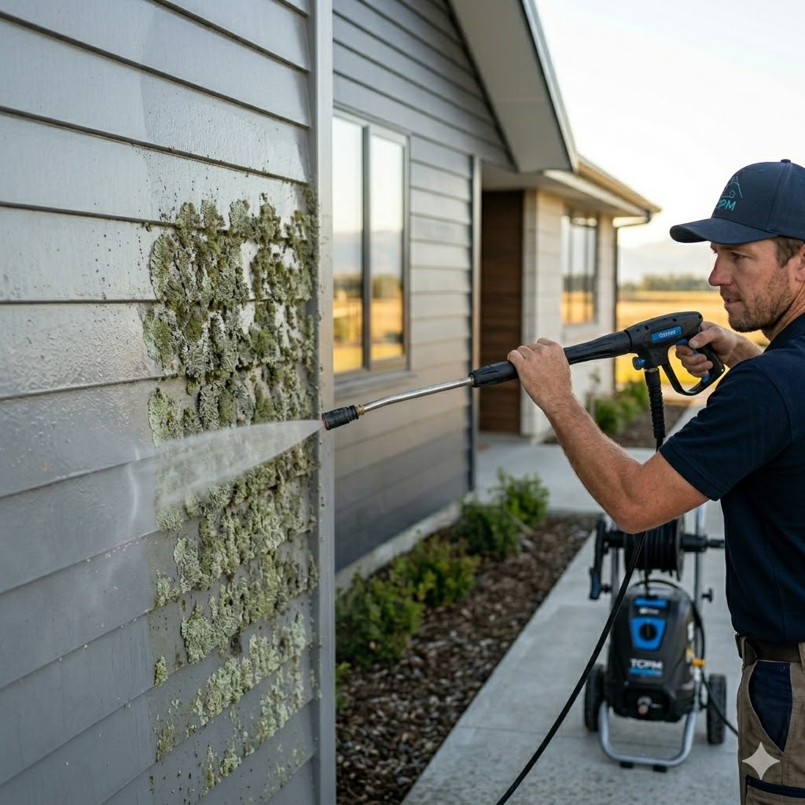
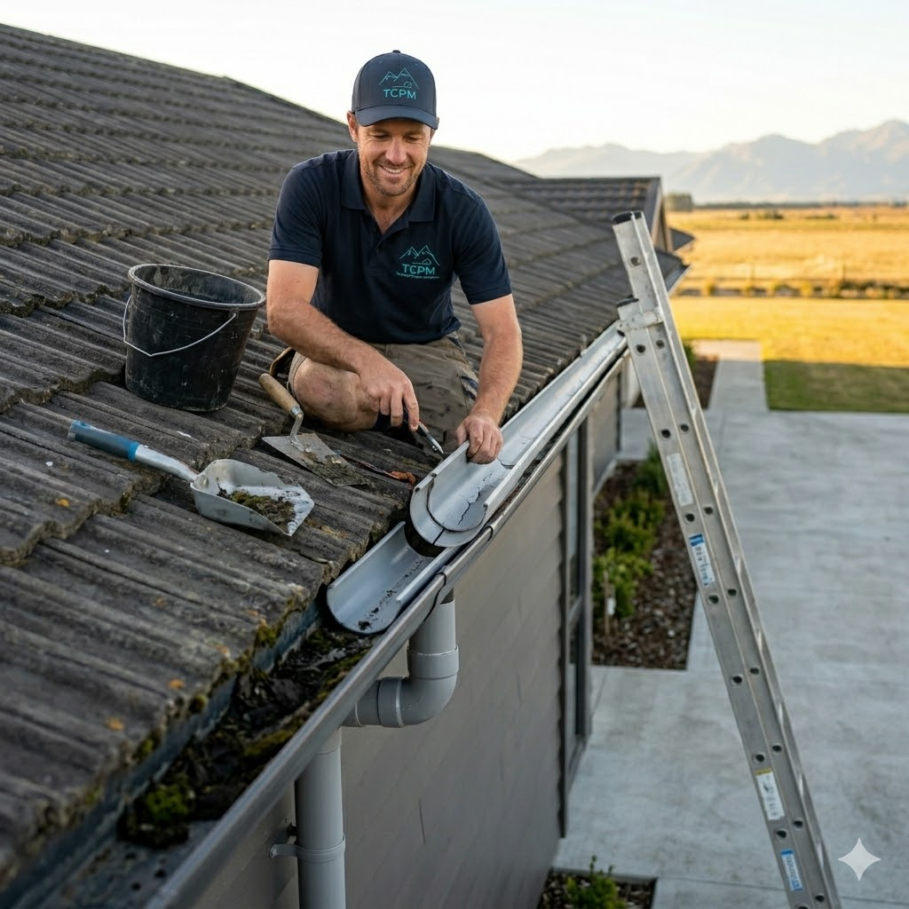
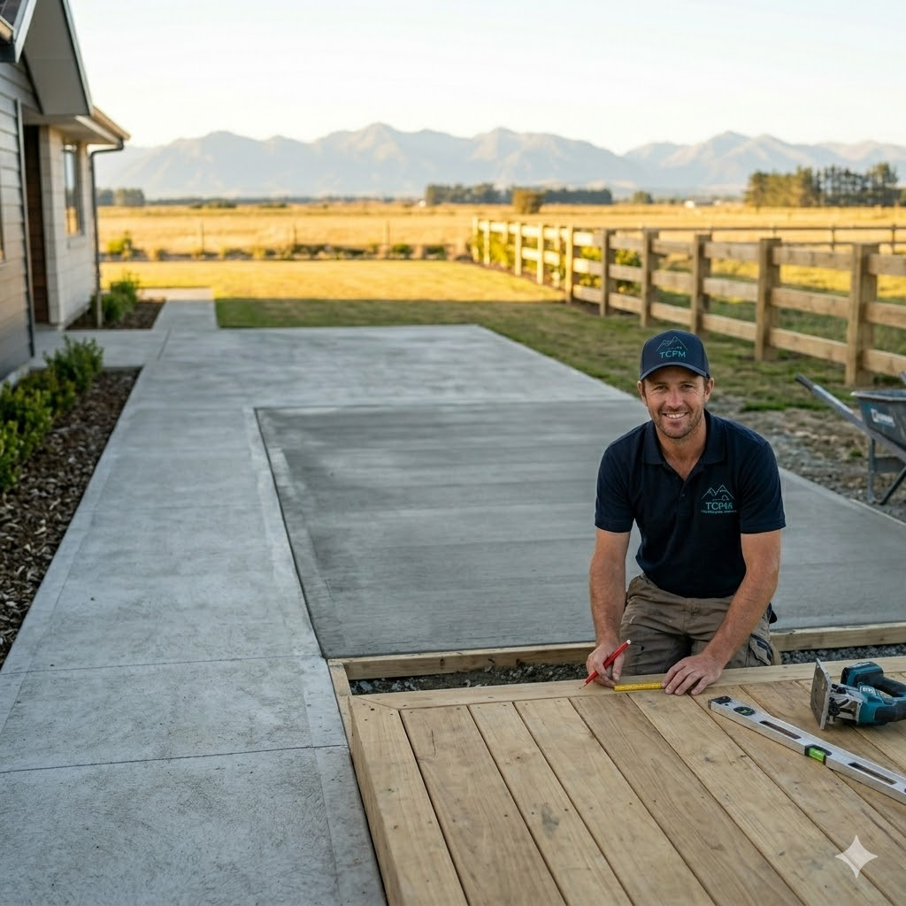
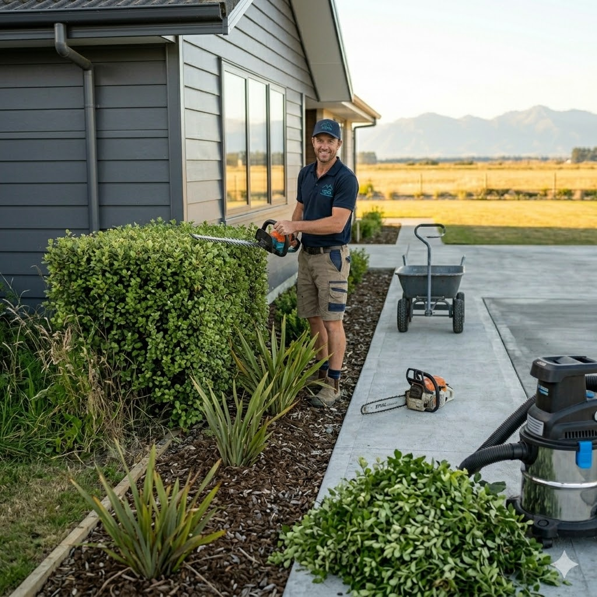

Our Services
From clearing gutters to building driveways. Professional property maintenance solutions for Rakaia and the Ashburton District.
Exterior Cleaning & Treatments
Over time, the Canterbury weather takes a toll on your property. Dirt, grime, moss, and lichen don't just look messy—they can cause long-term damage to your roofing and cladding if left untreated.
We provide comprehensive exterior washing to breathe new life into your home. Our specialized moss and lichen kill treatments are designed to safely eradicate invasive growths at the root.
- External House Washing: Safe and effective removal of dirt and buildup from exterior walls and outbuildings.
- Lichen & Moss Kill: Specialized spray treatments. (Note: Best applied during active growth phases in Autumn or Spring for maximum results).
- Driveway & Pathway Cleaning: Restoring slip-resistance and visual appeal to your concrete surfaces.


Roofing & Drainage Maintenance
Water is your property's worst enemy. Blocked gutters, cracked tiles, or poor drainage can quickly lead to expensive internal water damage or pooling around your foundations.
We take the hassle out of working at heights. Whether it's a minor leak repair, a complete gutter replacement, or fixing up your property's drainage flow, we ensure water goes exactly where it's supposed to.
- Roof & Gutter Repairs: Fixing leaks, securing loose iron or tiles, and maintaining flashings.
- Gutter Clearing & Replacement: Removing debris blockages or installing entirely new spouting systems.
- Drainage Repairs: Fixing broken pipes, unblocking surface drains, and preventing water pooling on your section.
Hardscaping, Driveways & Fencing
Improve your home's street appeal and create functional outdoor living spaces. We construct, repair, and maintain the structural elements of your landscape.
From pouring a fresh concrete driveway that can handle heavy traffic, to building a private boundary fence or a summer deck, our workmanship is built to last.
- Driveway Construction: Expert installation and repair offering options in solid concrete, durable asphalt, or decorative pavers.
- Fencing Solutions: Boundary fences, secure pool fencing, and general repairs to keep your property safe and private.
- Decks & Outdoor Areas: Construction and upkeep of timber decking and outdoor entertainment spaces.


Landscaping & Groundskeeping
An overgrown section isn't just an eyesore; it can harbor pests and create hazards during high winds. We help you reclaim your yard and keep your grounds looking immaculate.
Whether you need a dangerous branch removed safely, or just a massive seasonal garden tidy-up, we bring the tools and the muscle to get it sorted efficiently.
- Tree Trimming & Pruning: Keeping trees healthy and away from powerlines or rooflines.
- Tree Removal: Safe and controlled felling and removal of unwanted or dead trees.
- Garden Cleanup: Comprehensive tidying, green waste removal, and section clearing.
General Maintenance & Network
Sometimes you just have a list of odd jobs that need doing. Our "Everything Property Maintenance" approach means we can tackle the minor fixes that keep your property running smoothly.
The Take Care Guarantee: We are completely honest about our capabilities. If we inspect a job and realize it requires a highly specialized tradesperson (like a master electrician or specialized plumber), we won't bluff our way through it. Through our Contractor Networking promise, we will organize or recommend a trusted, vetted professional who can step in.
Discuss Your Maintenance ListAshburton's Trusted Network
We pride ourselves on getting the job done properly. If we can't do it, we know the exact local professional who can.